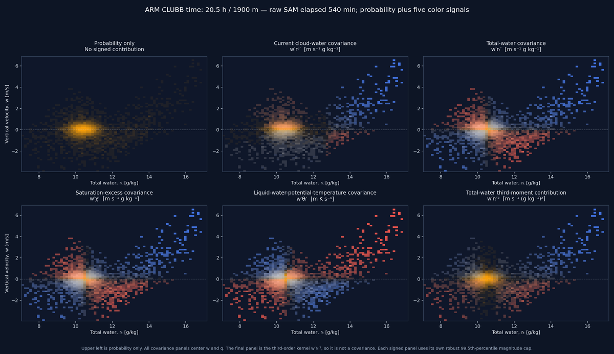

SAM heatmap color signals: ARM 20.5 h / 1900 m
A self-contained ARM rendering at 1900 m: probability only alongside the current cloud-water, total-water, saturation-excess, thermal, and rtp2-style signals.
Answer at a glance
Gold denotes populated probability mass, blue/red denote positive/negative local cloud-water transport contribution, and pale colors denote overlap. The display is excellent for locating physically consequential plumes, but its intensity is deliberately not a universal density scale: probability and transport are separately log-normalized and combined through a quantized bivariate palette.
Correct ARM clock alignment
20.5 h is the CLUBB ARM case-clock time (73,800 s), not the raw-SAM filename time. ARM starts its CLUBB clock at 41,400 s, while raw SAM names planes by elapsed LES seconds. This report reproduces the Plot tab's midpoint mapping for the 73,800–73,860 s window: 73,830 − 41,400 = 32,430 s, whose nearest one-minute raw plane is 32,400 s (540 min). Thus the figure is genuinely the requested 20.5 h CLUBB timeframe at 1900 m, with the raw-SAM elapsed-time provenance shown separately.
1. What becomes a SAM heatmap bin?
A raw horizontal SAM plane is loaded from an OUT_3D/*_micro.nc snapshot. The active reader flattens one model level’s W, RT, THL, CHI, and RC into samples. A projection then uses w on the vertical axis and one scalar on the horizontal axis: rt, χ, or rc.
For a bin b containing samples i, the probability field used by the current Plot tab and static atlas is
nb = number of horizontal cells in bin b; N = all cells in the sampled plane.
Historical experimental laboratory views used unnormalized counts in their color encoder. They are archived and are not part of the active Plot-tab comparison path.
2. The signed field behind blue and red
The intended modern convention is the binwise contribution to the domain covariance between vertical velocity and cloud water:
ΣbTb(rc) = w′rc′, in m s⁻¹ g kg⁻¹.
Positive bins are usually cloudy updrafts or relatively dry downdrafts; negative bins are cloudy downdrafts or relatively dry updrafts. This is why “blue” is not synonymous with “upward”: it is the sign of a local covariance contribution.
Canonical raw-plane path: dash_app/plot_tab/plot_types/pdf_contour_plot.py → _raw_histogram_bundle
probability = np.histogram2d(raw_x, raw_w, bins=(x_edges, y_edges))[0].T / raw_x.size
centered_w = raw_w - float(snapshot.mean[0])
centered_rc = np.asarray(snapshot.rc_samples) - float(snapshot.rcm)
local_transport = centered_w * centered_rc * 1000.0
signed_transport = np.histogram2d(
raw_x, raw_w, bins=(x_edges, y_edges), weights=local_transport
)[0].T / raw_x.sizeOne convention mismatch to fix before treating colors as interchangeable
The active static atlas and Plot tab center both variables, using w′rc′. This makes their signed contribution maps directly comparable when their binning and normalization policies are also aligned.
3. How the two fields become one color
Both positive probability and the magnitude of signed transport are robustly log-normalized. Let U be the 99.5th percentile of positive bins for a field and K = 0.025U. The normalization is
The result prevents one sharp plume core from making every weaker structure black. Probability gets p = L(P; UP); signed transport gets s = sign(T)L(|T|; UT). They are quantized, not passed as a conventional continuous scalar:
16 probability levels × 31 signed levels in interactive Plotly figures.
signed_bivariate_reference_rgb. Darkness means neither field is strong; fully saturated red or blue can occur even at low probability if a sparse bin carries a large local contribution. Pale colors are intentional overlap, not a third physical variable.Shared color encoder: dash_app/shared/bivariate_heatmap.py
strength = 1.0 - (1.0 - probability) * (1.0 - transport)
mixture = transport / max(probability + transport, 1.0e-12)
hue = (1.0 - mixture) * probability_color + mixture * transport_color
color = (1.0 - strength) * dark + strength * hue
overlap = min(probability, transport) ** 0.75
color = (1.0 - 0.68 * overlap) * color + 0.68 * overlap * overlap_color4. Why scales differ among views
| View | Binning / axes | Color cap | Important consequence |
|---|---|---|---|
| Plot tab raw-SAM background | Raw plane binned on the shared analytic-PDF grid; nearest SAM time to the selected window midpoint and nearest height. | One 99.5th-positive cap for probability and |transport|, shared across the figure’s background panels. | Panel-to-panel geometry is comparable inside the figure. Hover reports raw and normalized values. |
| SAM w–rₜ static atlas | 48 bins; axes fixed separately at each height from sampled times, with cloudy-tail protection. | For each height: 95th percentile across sampled times of each plane’s 99.5th-positive cap. | Time evolution at one height is intentionally comparable; colors are not a universal scale between heights. |
5. Coloring with a different variable
The architecture generalizes cleanly. Keep probability as the gold channel and replace cloud water by a chosen scalar q:
The bins still sum to w′q′, so the colored field has a precise moment interpretation. The label, units, hover text, and normalization metadata must change with q.
| Candidate q | What blue/red would mean | Where it helps | Main caveat |
|---|---|---|---|
| rc (current) | Positive/negative cloud-water covariance contribution. | Cloud transport and rare cloudy plumes. | Clear-air structure is intentionally weak; rc=0 carries a boundary mass in w–rc. |
| rt | Positive/negative total-water covariance contribution, w′rt′. | Transport plumes that are moist but not yet cloudy; a useful companion to cloud-water transport. | Moist background variability can be broader than cloud transport, so use a shared robust cap and do not call it cloud transport. |
| χ | Positive/negative covariance with saturation excess. | w–χ: makes the cloud threshold and near-saturated transport branch explicit. | Interpretation depends on the thermodynamic χ definition; do not silently substitute a linearized CLUBB χ for raw SAM χ. |
| θl | Positive/negative thermal covariance contribution. | Buoyant/thermal plume structure and w–θl comparisons. | Its sign does not mean moistening or cloud transport. |
| rt′² | Local contribution to w′rt′², a third-order tail moment. | Directly locating moisture-tail regions relevant to higher-order closure diagnostics. | This is not a covariance; normalization and the legend must say “third-moment contribution,” not transport. |
| Cloud indicator 1(rc>0) | Cloud-occurrence contrast rather than a flux. | Separating frequent weak cloud from rare intense cloud transport. | It discards cloud-water magnitude and should be a separate diagnostic, not disguised as transport. |
Matched raw-SAM example: probability plus five color signals
These panels use the same ARM raw plane mapped from the CLUBB 20.5 h window (raw elapsed 540 min, 1900 m, 9,216 horizontal cells), the same 72×72 w–rt bins, and the same probability field. The first panel is probability only; in the other panels only the blue/red signal changes. This cleanly separates an alternate color signal from a different time, grid, or probability normalization.

The probability-only panel has no signed field. The covariance panels integrate to their named covariances when the corresponding scalar varies; the current cloud-water map is zero here because this 1900 m raw plane contains no cloud water. The rtp2-style panel instead integrates to the third-order moment w′rt′². It is useful for locating thermodynamic tails, but it must never be interpreted as a flux.
Rendered, embedded artifact: figures/raw-sam-wrt-color-signals.png · reproduction script: doc/reports/sam-heatmap-coloring-examples-20h30/generate_color_signal_examples.py · raw metadata: data/raw-sam-wrt-color-signals.json
Do not encode a third independent field in the same RGB raster
The current scheme already uses hue/lightness to encode probability, transport sign, transport magnitude, and overlap. Adding cloud fraction, rt anomaly, or buoyancy as another RGB interpretation would make the map non-invertible. Use a matched small multiple, contours, or hover values for a third quantity instead.
6. Recommended next design
- Keep one shared helper taking
q, returningP_bandT_b^(q)with both w and q centered. Use it in the Plot tab and atlas generator. - Keep
q = r_cas the cloud-transport default, but add a deliberately named signal selector:r_c,r_t,χ,θ_l, and (later) selected higher-moment kernels. - Make scale policy explicit: shared within a comparison figure, height-stable through atlas time, and never implied to be universal across unrelated planes.
- Make the legend and hover state report raw
P_b, rawT_b^(q), normalized values, q units, and whether the source used raw SAM or analytic CLUBB. - For the transported-plume problem, start with paired w–rt plots: current
q=r_cbesideq=r_t. That separates actual cloud-water transport from the broader moist anomaly that may identify a plume before condensation.